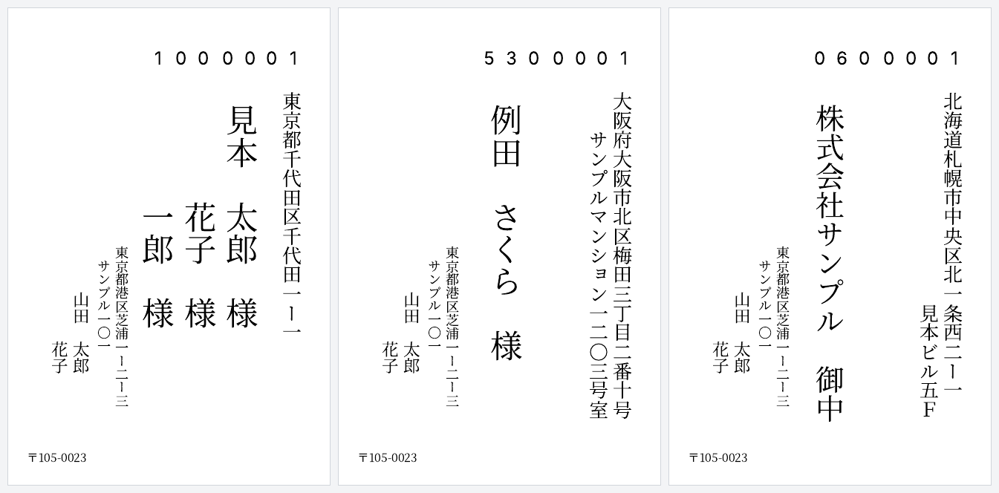

はがきの宛名印刷（縦書き）
年賀状・喪中はがき・寒中見舞いの宛名面を、Excel や CSV の住所録から縦書きで印刷するツールです。ソフトのインストールは不要で、Mac でも Windows でも、いつものブラウザで動きます。
980円（税込・買い切り）
お試し版はすべての機能を使えて、印刷は先頭3枚まで。プリンターでの位置合わせまで、購入前に確かめられます。決済が終わると、そのまま製品版の画面に移動します。ブックマークしておけば何度でも使えます。

印刷結果の例。住所・氏名は架空のものです。
こんなときに
- 宛名印刷のソフトが Windows 用しかなく、Mac では使えない
- 年に一度のために、宛名ソフトを買ったり入れたりしたくない
- 住所録は Excel で管理していて、それをそのまま使いたい
- Word の差し込み印刷は、毎年やり方を忘れてしまう
できること
- 住所録の読み込み：Excel（.xlsx）・CSV（UTF-8／Shift_JIS を自動判定）・表の貼り付け。「氏名」「郵便番号」「住所」などの見出しから列を自動で選びます（選び直し可）。姓・名が別の列でも、1列でも使えます
- 縦書きの体裁：番地の数字を漢数字に（「1-2-3」→「一ー二ー三」、「20丁目」→「二十丁目」、部屋番号「1203」→「一二〇三」）。英字は全角に。数字をそのまま（全角）にもできます
- 長い住所：1列に入らない住所は、市区町村の後ろなどで2列に分けます。建物名は別の列に。住所の列に建物名が一緒に入っていても、番地の後ろの空白で分けます
- 連名：4人まで（「花子」のように名だけなら、名の位置と「様」をそろえます）。敬称の列があればそれを使い、なければ「様」など選んだ敬称。会社名だけの宛名は「御中」
- 差出人：住所・氏名・連名を左下に。郵便番号は左下に「〒123-4567」の形で印刷します。一度入れればブラウザに保存されます
- 位置合わせ：郵便番号は、日本郵便の示す郵便番号枠の位置（はがきの上端から12mm・右端から8mm）に合わせて印刷。普通紙に枠つきで試し刷りし、ずれは 0.5mm 単位で補正できます
- 出さない人を外す：一覧でチェックを外すか、住所録の「印刷」列に「×」「0」などがあれば外します（喪中の方など）
- 明朝体・ゴシック体を選べます
できないこと（購入前にご確認ください）
- はがきの宛名面だけです。裏面（絵柄・写真）には対応していません。封筒は 封筒の宛名印刷、A4 のラベル用紙は 宛名ラベルの面付け印刷 をお使いください
- はがきは縦書きのみです。横書きの宛名には対応していません
- 人名の外字（パソコンにない字）は印刷できません。住所録に入っている文字のとおりに印刷します
- 住所の正しさ（郵便番号と住所が合っているか）は調べません
- 差出人の郵便番号は、枠ではなく「〒」つきの文字で印刷します
- 印刷の仕上がりは、プリンターと用紙の設定によって変わります。お試し版での試し刷りをおすすめします
- スマートフォンでは操作しにくいため、パソコンでお使いください
よくある質問
| 住所録はどこかに送られますか？ | 送られません。読み込み・計算・印刷は、すべてお使いのブラウザの中で行います。 |
|---|---|
| 他の宛名ソフトの住所録は使えますか？ | そのソフトから CSV で書き出せば使えます。見出しが違っても、列は画面で選び直せます。 |
| 郵便番号が枠からずれます | 印刷画面で倍率を「100%（実際のサイズ）」、余白を「なし」にしてください。それでもずれる場合は、「ずれの補正」で mm 単位で直せます。 |
| 何枚まで印刷できますか？ | 製品版は枚数の制限はありません。来年以降も同じ画面で使えます。 |
安心してお使いいただくために
- 住所録はお使いのブラウザの中だけで処理し、サーバーには送信しません
- 動作環境：最新版の Chrome・Safari・Edge・Firefox（パソコン）
- 説明どおりに動かない場合は、ご購入から7日以内にご連絡いただければ返金します